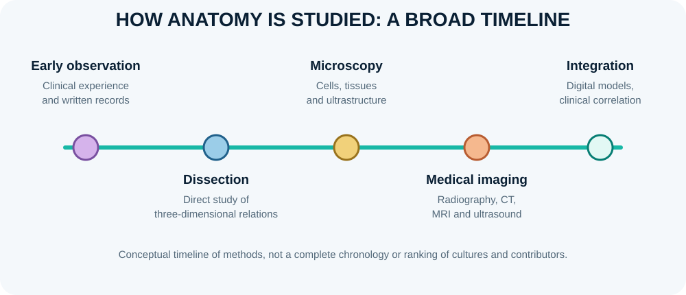

History, scope and branches of human anatomy

Anatomy is the scientific study of the form, organisation and relationships of body structures. It is best learned as a language and a method: observe structures, describe their position precisely, compare normal variation, and relate structure to function. Modern anatomy draws on dissection, microscopy, imaging, endoscopy, developmental biology and digital reconstruction. Its history includes changing cultural, ethical and technical approaches, so no single person or period explains the whole discipline.
Learning objectives
- Describe major phases in the development of human anatomy.
- Distinguish gross, microscopic, developmental, neuroanatomical and clinical anatomy.
- Explain how dissection, imaging, microscopy and clinical observation contribute different kinds of anatomical evidence.
High-yield study points
- Ancient Egyptian medical papyri document early practical knowledge of injury and organs; ancient Greek thinkers developed influential systematic accounts of the body, though many explanations were speculative.
- Hippocratic writers emphasised clinical observation; Aristotle contributed comparative anatomy and embryological observations.
- Herophilus and Erasistratus in Hellenistic Alexandria are associated with early systematic human anatomical investigation, although the evidence survives incompletely.
- Galen's animal-based anatomical and physiological writings strongly influenced European and Middle Eastern medicine for centuries; some conclusions did not transfer accurately to human anatomy.
- During the Renaissance, renewed human dissection and works such as Andreas Vesalius's De humani corporis fabrica (1543) challenged inherited anatomical errors through direct observation.
- Microscopes expanded knowledge of cells and tissues; X-rays, CT, MRI, ultrasound, endoscopy and digital imaging later enabled in-vivo anatomical study.
- Major branches include gross, microscopic, developmental, neuro-, surface, radiological, functional, comparative, clinical and applied anatomy.
Clinical connection
Modern anatomy is evidence-based and ethical: anatomical claims should be checked against observation and reliable sources, while human tissue use must follow consent, law and institutional standards.
Check your understanding
- Which branch studies tissue structure at microscopic scale?
Reveal answer
Histology, a branch of microscopic anatomy.
- Why should historical anatomical claims be considered in their scientific context?
Reveal answer
Methods, cultural context, access to human material and available technology shaped what could be observed and how conclusions were drawn.
- How do medical imaging and dissection complement each other?
Reveal answer
Dissection reveals direct structural relationships; imaging shows living anatomy and internal structures without dissection.
Check your understanding: history of anatomy
- Why should historical anatomical claims be interpreted in their cultural and technological context?
Answer and explanation
Access to human bodies, dissection practices, imaging technology, prevailing theories and social rules shaped what investigators could observe and publish.
- Why is the history of anatomy not simply a sequence of isolated “great discoveries”?
Answer and explanation
Knowledge accumulated through translation, teaching traditions, anatomical observation, debate, instruments and collaborative correction of earlier errors.
- What is one major change brought by modern medical imaging?
Answer and explanation
Structures can be examined in living patients and in cross-section, allowing anatomy to be correlated with function and disease without relying only on dissection.
Further reading
US National Library of Medicine: Historical Anatomies provides digitised historical works. Use original editions carefully: historical descriptions may use outdated terms or contain errors later corrected.